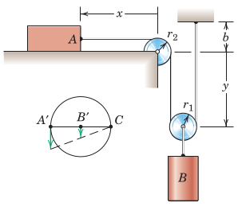
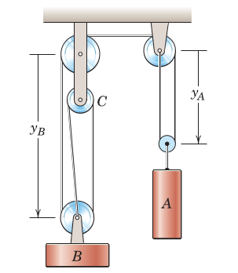
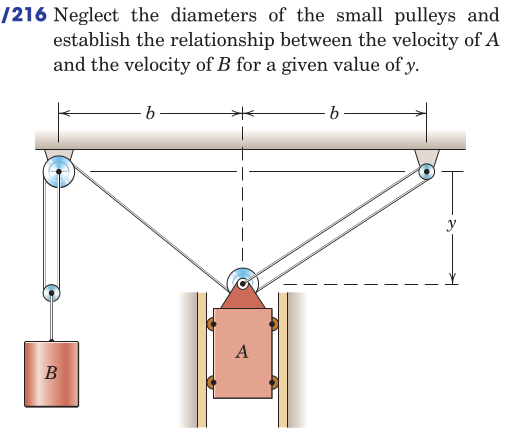

When the cylinder \(A\) has a downward velocity of 0.3 m/s, determine the velocity of \(B\).


From the book: Section 2.9, Problems
From Hibbeler, Engineering Mechanics: Dynamics: Chapter 12, 147, 153, 169, 175, 177, 179